fastmath.complex
Complex numbers functions.
Complex number is represented as Vec2 type (from clojure2d.math.vector namespace).
To create complex number use complex, vec2 or ->Vec2.
Simplified implementation based on Apache Commons Math. Functions don’t check NaNs or INF values.
Complex plane (identity) looks as follows:
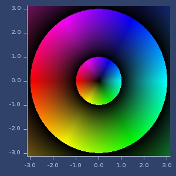
acos
(acos z)acos
Examples
acos(z)
(acos (complex 2 -1))
;;=> [0.5073563032171449 1.4693517443681863]Plot of acos
asin
(asin z)asin
Examples
asin(z)
(asin (complex 2 -1))
;;=> [1.0634400235777521 -1.4693517443681852]Plot of asin
atan
(atan z)atan
Examples
atan(z)
(atan (complex 2 -1))
;;=> [1.1780972450961724 -0.1732867951399863]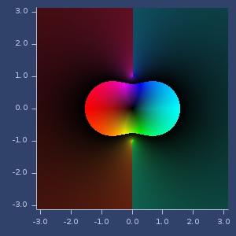Plot of atan
complex
(complex a b)(complex a)(complex)Create complex number. Represented as Vec2.
Examples
New complex number.
(complex 2 -1)
;;=> [2.0 -1.0]conjugate
(conjugate z)Complex conjugate. \(\bar{z}\)
Examples
Conjugate
(conjugate I)
;;=> [0.0 -1.0]cos
(cos z)cos
Examples
cos(z)
(cos (complex 2 -1))
;;=> [-0.6421481247155197 1.0686074213827785]Plot of cos
cosh
(cosh z)cosh
Examples
cosh(z)
(cosh (complex 2 -1))
;;=> [2.0327230070196656 -3.0518977991517997]Plot of cosh
csc
(csc z)cosecant
Examples
csc(z)
(csc (complex 2 -1))
;;=> [0.6354937992539001 -0.22150093085050934]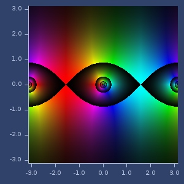Plot of csc
div
(div z1 z2)Divide two complex numbers.
Examples
Divide
(div (complex 1 2) (complex 3 4))
;;=> [0.44 0.08]exp
(exp z)exp
Examples
exp(z)
(exp (complex 2 -1))
;;=> [3.992324048441272 -6.217676312367968]\(e^{i\pi}+1\)
(add (exp (complex 0 m/PI)) ONE)
;;=> [0.0 1.224646799076922E-16]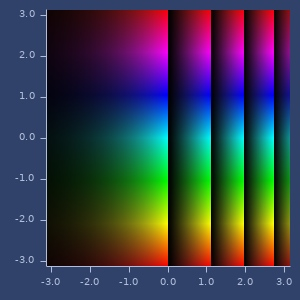Plot of exp
log
(log z)log
Examples
log(z)
(log (complex 2 -1))
;;=> [0.8047189562170503 -0.4636476090008061]log(e)
(log (complex m/E 0))
;;=> [1.0 0.0]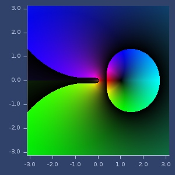Plot of log
mult
(mult z1 z2)Multiply two complex numbers.
Examples
Multiply
(mult (complex 1 2) (complex 3 4))
;;=> [-5.0 10.0]neg
(neg z)Negate complex number. \(-z\)
Examples
Negate.
(neg (complex 1 2))
;;=> [-1.0 -2.0]pow
(pow z1 z2)Power. \(z_1^{z_2}\)
Examples
\(\sqrt{2}\)
(pow TWO (complex 0.5 0.0))
;;=> [1.4142135623730951 0.0]Complex power
(pow (complex 1 2) (complex 3 4))
;;=> [0.12900959407446697 0.03392409290517014]reciprocal
(reciprocal z)\(\frac{1}{z}\)
Examples
Reciprocal of real
(reciprocal TWO)
;;=> [0.5 0.0]Reciprocal of complex
(reciprocal (complex 0 2))
;;=> [0.0 -0.5]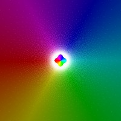Plot of reciprocal
sec
(sec z)secant
Examples
sec(z)
(sec (complex 2 -1))
;;=> [-0.41314934426693994 -0.6875274386554792]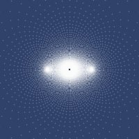Plot of sec
sin
(sin z)sin
Examples
sin(z)
(sin (complex 2 -1))
;;=> [1.403119250622041 0.4890562590412935]Plot of sin
sinh
(sinh z)sinh
Examples
sinh(z)
(sinh (complex 2 -1))
;;=> [1.9596010414216063 -3.1657785132161678]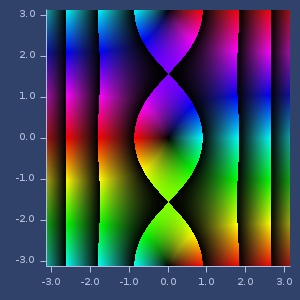Plot of sinh
sq
(sq z)Square complex number. \(z^2\)
Examples
Square.
(sq (complex 1 2))
;;=> [-3.0 4.0]\(i^2\)
(sq I)
;;=> [-1.0 0.0]Plot of sq
sqrt
(sqrt z)Sqrt of complex number. \(\sqrt{z}\)
Examples
Square root of real.
(sqrt (complex 2 0))
;;=> [1.4142135623730951 0.0]Square root of complex.
(sqrt (complex 2 2))
;;=> [1.5537739740300376 0.6435942529055827]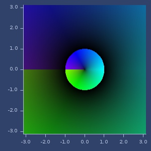Plot of sqrt
sqrt1z
(sqrt1z z)\(\sqrt{1-z^2}\)
Examples
Example 1
(sqrt1z (complex 2 3))
;;=> [3.115799084103365 -1.9256697360916721]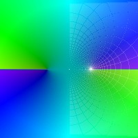Plot of sqrt1z
tan
(tan z)tan
Examples
tan(z)
(tan (complex 2 -1))
;;=> [-0.2434582011857252 -1.1667362572409201]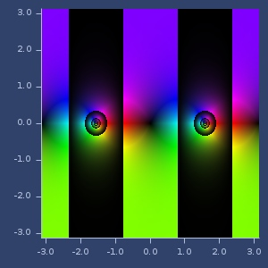Plot of tan
tanh
(tanh z)tanh
Examples
tanh(z)
(tanh (complex 2 -1))
;;=> [1.0147936161466335 -0.0338128260798967]Plot of tanh